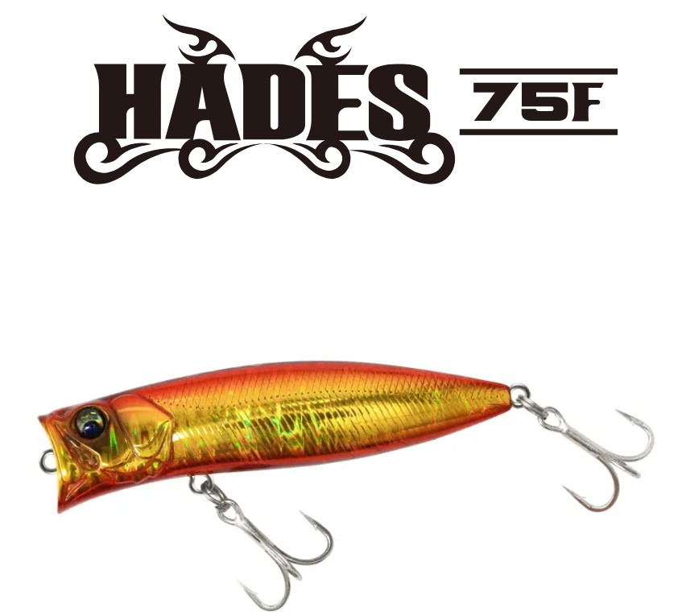
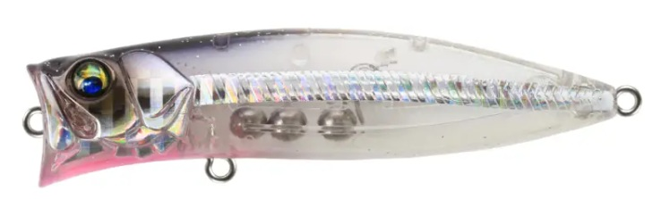
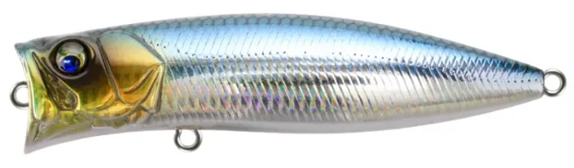
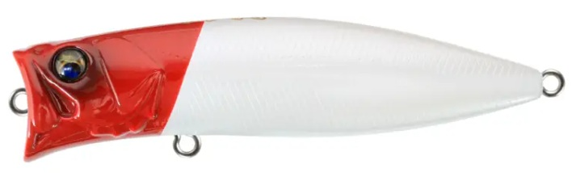
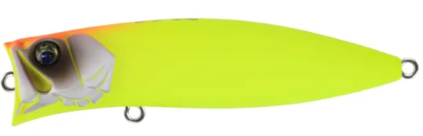

Hades75F(ハーデス75F)
Hades75F(ハーデス75F)はバスデイが2026年春にリリースした、人気シャローミノー「ハーデス127F」の待望のダウンサイジングモデルです。
75mmのコンパクトボディに、オリジナルのDNAをそのまま継承。食わせ力と対応魚種をさらに拡大した新世代シャローミノーです。

スペック
- メーカー
- BASSDAY(バスデイ)
- 長さ
- 75 mm
- 重さ
- 11 g
- フック
- #6×2
- リング
- #3
- レンジ
- 0～40 cm
- タイプ
- シャローランナー
- 沈下タイプ
- フローティング
- アクション
- ナチュラル+引き波
- ターゲット
- シーバス
- 価格
- 2050円(税抜)
- 発売日
- 2026/05/02
▼今すぐチェック

ハーデス75Fの特徴
より使いやすい、どんなシチュエーションでも浅場を攻略できるミノー
-
ダウンサイジングを感じさせない飛距離
バスデイ独自の重心移動システム「TSL（トーションスプリングロックシステム）」にタングステン球体ウエイト×3を採用。
キャスト時は重心が移動して飛距離を稼ぎ、着水後は素早くアクションへ移行。振り抜けが良く、向かい風でも安定した飛行姿勢を実現。 -
より細かいピッチのウォブンロール
127Fと比べてアクションのピッチが細かく、操作レスポンスが向上。
流れやリトリーブスピードの変化でアクションが変わりやすく、食わせの間を演出しやすい。スローリトリーブではハーデス特有の引き波、速巻きでは小魚のエスケープアクションも演出可能。 -
強靭な太軸フック標準装備
オリジナル太軸#6トレブルフックを搭載。ランカーシーバスや不意の青物にも安心してやり取りできるフック強度。
ハーデス75Fの使い方・得意な状況
基本的な使い方は着水後、水面直下〜40cm程度のレンジをスローリトリーブでトレースするだけ。リップレスミノーながらレンジキープ性が高く、浮き上がりにくいのが強み。
得意な状況はマイクロベイトやハクパターンが多発する春〜初夏の港湾・河川シャローエリア。サイズが小さい分スレた個体や低活性時にも有効で、127Fで食わせきれないシーンの切り札になる。
サーフでのフラットフィッシュやヒラスズキ狙いにも対応。75mmというサイズ感はベイトフィッシュが小さい時期にドンピシャでハマる。
ワンポイント
ドリフトさせながらスローリトリーブが最も効果的な釣法。流れに乗せてテンションをかけ、流れから一瞬外れたときのちどるような動きがバイトのトリガーになりやすい。
早巻きでのリアクションも有効なので、ただ巻き→ストップ→早巻きとテンポを変えて探ってみよう。
人気カラー

ケイムラクリアフラッシュ紫外線に反応して発光するクリア系。デイゲームやマズメ時の切り札。

リアルベイトベイトライクな配色のオールラウンダー。マッチザベイトで迷ったらまずこれ。

レッドヘッドシーバス定番中の定番。ナイト・デイ問わず安定した実績を誇るカラー。

マットチャート濁り・ナイト・曇天に強い視認性重視カラー。濁り潮でのシーバスに特に有効。
画像出典:バスデイ公式HP
ハーデス75Fに似ているルアー
- カゲロウ100F
- アイザー100F